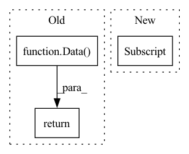

Pattern ID :31379

Before Change
mol = self.files[ifile][name]
// Get molecular data
return Data(
q=pt.tensor(mol.attrs["charge"], dtype=pt.long),
s=pt.tensor(mol.attrs["spin"], dtype=pt.long),
z=pt.tensor(mol["atomic_numbers"], dtype=pt.long),
pos=pt.tensor(mol["positions"][iconf], dtype=pt.float32),
y=pt.tensor(mol["energy"][iconf], dtype=pt.float32),
dy=pt.tensor(mol["forces"][iconf], dtype=pt.float32),
d=pt.tensor(mol["dipole_moment"][iconf], dtype=pt.float32),
)
def len(self):
return len(self.mol_indices)
After Change
def get(self, idx):
atoms = slice(self.idx_mm[idx], self.idx_mm[idx + 1])
z = pt.tensor(self.z_mm[atoms], dtype=pt.long)
pos = pt.tensor(self.pos_mm[atoms], dtype=pt.float32)
y = pt.tensor(self.y_mm[idx], dtype=pt.float32).view(
In pattern: SUPERPATTERN
Frequency: 4
Non-data size: 3
Instances
Fragment ID: 92049212
Project Name: torchmd/torchmd-net
Commit Name: 02dc181f9fb06b9b81cf64af0f56f5b5560751e4
Time: 2022-09-07
Author: r.galvelis@acellera.com
File Name: torchmdnet/datasets/ace.py
M Class Name: Ace
N Class Name: Ace
M Method Name: get(2)
N Method Name: get(2)
M Parent Class: Dataset
N Parent Class: Dataset
M File Name: torchmdnet/datasets/ace.py
N File Name: torchmdnet/datasets/ace.py
M Start Line: 27
M End Line: 39
N Start Line: 217
N End Line: 228
'>
Before Change
)
else:
types, pos, energy, i = self.index[idx]
return Data(
pos=torch.from_numpy(pos[i]),
z=torch.from_numpy(types[i]).to(torch.long),
y=torch.tensor([[energy[i]]]),
)
def len(self):
return self.num_molecules
After Change
self.setup_index()
entry = self.index[idx]
i = entry[-1]
data = Data()
for j, field in enumerate(self.fields):
d = entry[j]
if d.ndim == 1:
'>
Fragment ID: 92049213
Project Name: torchmd/torchmd-net
Commit Name: 4f761a504205f9e12b850b7345df91d275f45a03
Time: 2022-12-02
Author: peastman@stanford.edu
File Name: torchmdnet/datasets/hdf.py
M Class Name: HDF5
N Class Name: HDF5
M Method Name: get(2)
N Method Name: get(2)
M Parent Class: Dataset
N Parent Class: Dataset
M File Name: torchmdnet/datasets/hdf.py
N File Name: torchmdnet/datasets/hdf.py
M Start Line: 70
M End Line: 86
N Start Line: 74
N End Line: 83
'>
Before Change
adj = to_dense_adj(edge_index, max_num_nodes=node_num)[0]
adj = adj[idx_sampled, :][:, idx_sampled]
return Data(x=data.x[idx_sampled], edge_index=dense_to_sparse(adj)[0])
def views_fn(self, data):
rMethod to be called when :class:`RWSample` object is called.
After Change
idx_neigh.union(set([n.item() for n in edge_index[1][edge_index[0]==idx_sub[-1]]]))
idx_sub = torch.LongTensor(idx_sub).to(data.x.device)
mask_nondrop = torch.zeros_like(data.x[:,0]).scatter_(0, idx_sub, 1.0).bool()
edge_index, _ = subgraph(mask_nondrop, data.edge_index, relabel_nodes=True, num_nodes=node_num)
return Data(x=data.x[mask_nondrop], edge_index=edge_index)
'>
Fragment ID: 92049227
Project Name: divelab/dig
Commit Name: 1d5b8789cd1b259527840a3f481f7dff5e4b96db
Time: 2021-08-09
Author: xieyc95@gmail.com
File Name: dig/sslgraph/method/contrastive/views_fn/sample.py
M Class Name: RWSample
N Class Name: RWSample
M Method Name: do_trans(2)
N Method Name: do_trans(2)
M Parent Class:
N Parent Class:
M File Name: dig/sslgraph/method/contrastive/views_fn/sample.py
N File Name: dig/sslgraph/method/contrastive/views_fn/sample.py
M Start Line: 77
M End Line: 100
N Start Line: 76
N End Line: 97
'>
Before Change
adj = to_dense_adj(data.edge_index, max_num_nodes=node_num)[0]
adj = adj[idx_nondrop, :][:, idx_nondrop]
return Data(x=data.x[idx_nondrop], edge_index=dense_to_sparse(adj)[0])
def views_fn(self, data):
rMethod to be called when :class:`UniformSample` object is called.
After Change
_, edge_num = data.edge_index.size()
keep_num = int(node_num * (1-self.ratio))
idx_nondrop = torch.randperm(node_num)[:keep_num]
mask_nondrop = torch.zeros_like(data.x[:,0]).scatter_(0, idx_nondrop, 1.0).bool()
edge_index, _ = subgraph(mask_nondrop, data.edge_index, relabel_nodes=True, num_nodes=node_num)
return Data(x=data.x[mask_nondrop], edge_index=edge_index)
'>
Fragment ID: 92049203
Project Name: divelab/dig
Commit Name: 1d5b8789cd1b259527840a3f481f7dff5e4b96db
Time: 2021-08-09
Author: xieyc95@gmail.com
File Name: dig/sslgraph/method/contrastive/views_fn/sample.py
M Class Name: UniformSample
N Class Name: UniformSample
M Method Name: do_trans(2)
N Method Name: do_trans(2)
M Parent Class:
N Parent Class:
M File Name: dig/sslgraph/method/contrastive/views_fn/sample.py
N File Name: dig/sslgraph/method/contrastive/views_fn/sample.py
M Start Line: 25
M End Line: 31
N Start Line: 25
N End Line: 30